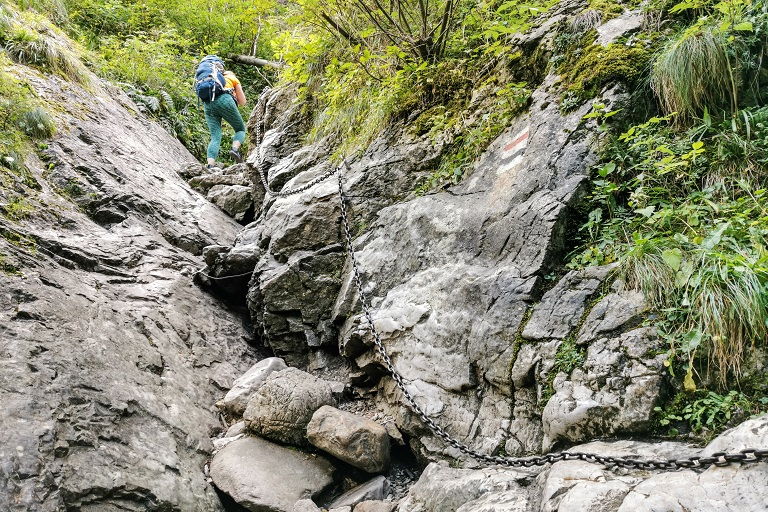

Jaskinia Raptawicka
< Wróć
Jaskinia Raptawicka znajduje się 180 metrów nad dnem Doliny Kościeliskiej i można śmiało zwiedzać ją samodzielnie bez przewodnika. Wraz z Jaskinią Mylną oraz Jaskinią Obłazkową, jest częścią systemu Jaskinie Pawlikowskiego. Sama Jaskinia Raptawicka ma głębokość 15 metrów i długość 150 metrów. Aby się do niej dostać, będziecie musieli nieco wgramolić się po skale i następnie zejść do jaskini po kilkumetrowej, pionowej drabinie.
